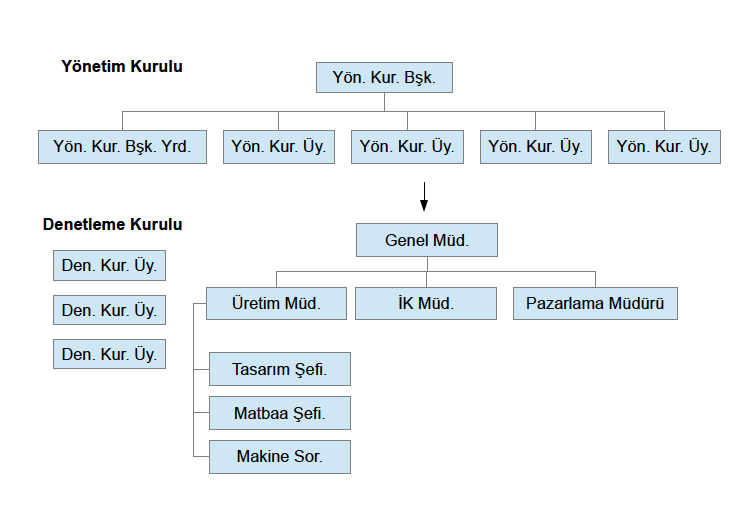

Kurumsal Bilgiler
| Ticaret Ünvanı: | Kızılyıldız Matbaacılık A.Ş. |
| Ticaret Sicil No: | 283723-23498-2434 |
| Bağlı Olunan Ticaret Odası: | İstanbul Matbaacılar Odası |
| Kuruluş Tarihi: | 14 Mart 1971 |
| Yetkili Müdür: | Soner Kabadayısarı |
| Ticaret Ünvanı: | Kızılyıldız Matbaacılık A.Ş. |
| Ticaret Sicil No: | 283723-23498-2434 |
| Bağlı Olunan Ticaret Odası: | İstanbul Matbaacılar Odası |
| Kuruluş Tarihi: | 14 Mart 1971 |
| Yetkili Müdür: | Soner Kabadayısarı |
tarihinde eklendi
17 Ekim 2012 Tarihi itibariyle şirketimizin yönetim şeması aşağıdaki gibidir. Tüm ilgililere duyurulur.
Kızılyıldız Matbaacılık A.Ş.
Yetkili Müdür: Soner Kabadayısarı
tarihinde eklendi
17 Ekim 2012 Tarihi itibariyle şirketimizin ortaklık yapısı aşağıdaki gibidir. Tüm ilgililere duyurulur.
Kızılyıldız Matbaacılık A.Ş.
5.000.000 TL Sermaye Bedeli ile
17 Ekim 2012 Tarihi itibariyle şirketimizin 3 yıllık finansal yapısı aşağıdaki gibidir. Tüm ilgililere duyurulur.
Kızılyıldız Matbaacılık A.Ş.
2009-2012 Finansal Plan17 Ekim 2012 Tarihi itibariyle şirketimizin 2012 Bilançosu aşağıdaki gibidir. Tüm ilgililere duyurulur.
Kızılyıldız Matbaacılık A.Ş.
 2011 Yılına Ait Bilanço
2011 Yılına Ait Bilanço